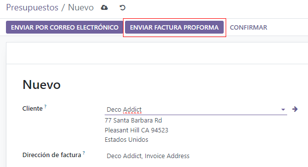
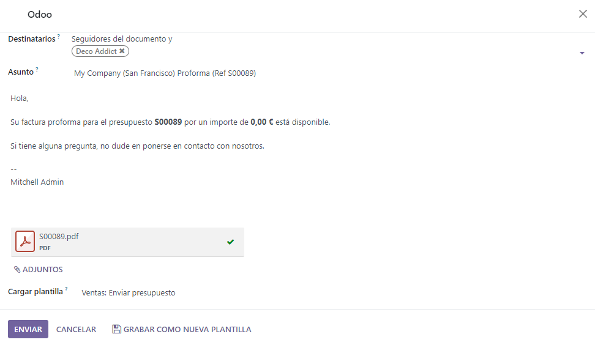
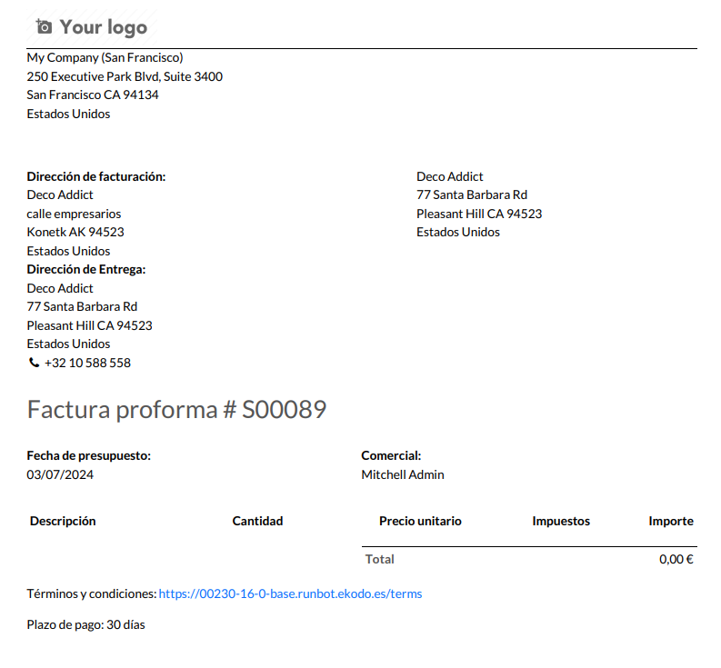

Facturas proforma¶
Una factura proforma es una factura resumida o estimada que se envía antes de entregar la mercancía. Esta indica el tipo y la cantidad de bienes, su valor y otra información importante como los cargos por peso y transporte.
Las facturas proforma se utilizan comúnmente como facturas preliminares con una cotización. También se utilizan durante la importación para fines aduaneros. Difieren de una factura normal, en que no son una demanda (o solicitud) de pago.
Configuración¶
Debe activar la función factura proforma para poder utilizar facturas proforma.
Para activar esta función, vaya a la aplicación y, en la sección cotizaciones y órdenes, haga clic en la casilla que se encuentra junto a factura proforma. Luego, haga clic en el botón correspondiente para guardar todos los cambios.
Enviar factura proforma¶
Una vez que activó la función Factura proforma, tendrá la opción de enviarla desde cualquier cotización u orden de venta con el botón Enviar factura proforma.
Nota
Las facturas proforma no se pueden enviar para una orden de venta o cotización si ya se ha enviado una factura por un pago inicial, o para una suscripción recurrente.
En cualquier caso, no aparecerá el botón enviar factura proforma.
Sin embargo, se pueden enviar facturas proforma para servicios, registros de eventos, cursos y nuevas suscripciones. Las facturas proforma no se limitan a bienes físicos, consumibles o almacenables.
Cuando se hace clic en el botón enviar factura proforma, aparece una ventana emergente desde la cual se puede enviar un correo electrónico.
En la ventana emergente, el campo destinatarios se completa automáticamente con el cliente de la orden de venta o cotización. El campo asunto y el cuerpo del correo electrónico se pueden modificar, si es necesario.
La factura proforma se agrega automáticamente como un adjunto al correo electrónico.
Una vez que esté listo, haga clic en Enviar y Odoo enviará el correo electrónico con la factura proforma adjunta al cliente.
Truco
Para previsualizar la factura proforma haga clic en el PDF en la parte inferior de la ventana emergente de correo electrónico antes de hacer clic en enviar. El documento se descargará de forma automática al hacer clic en el PDF, ábralo para ver y revisar el contenido de la factura proforma.
